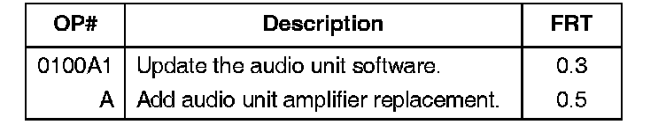
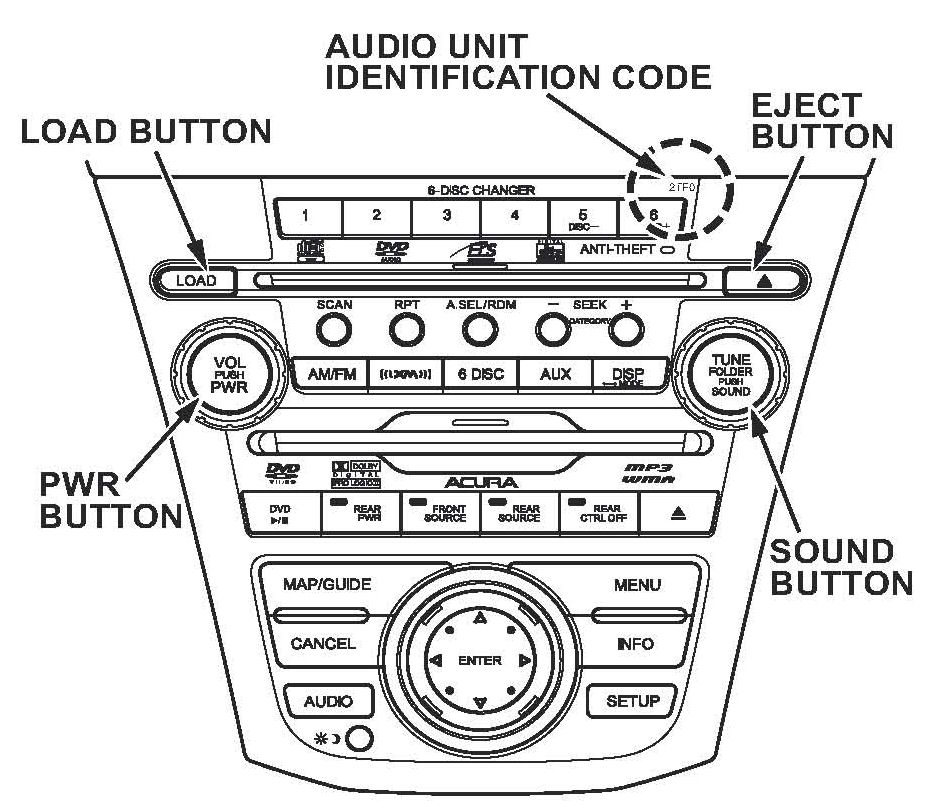
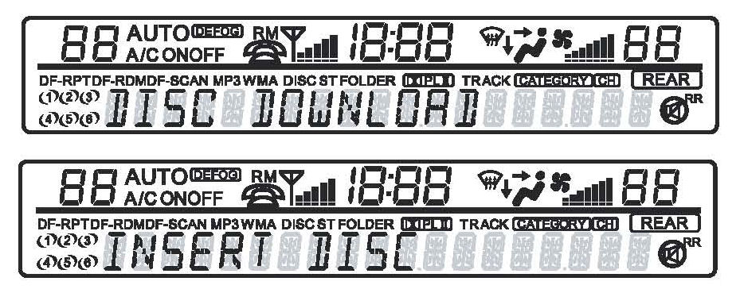
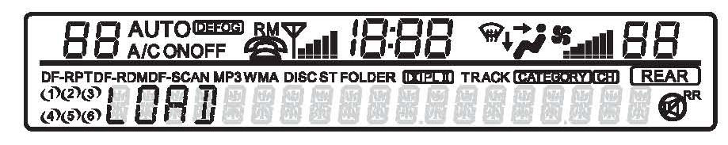
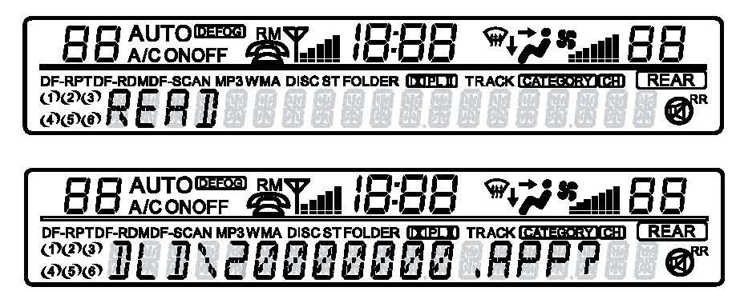
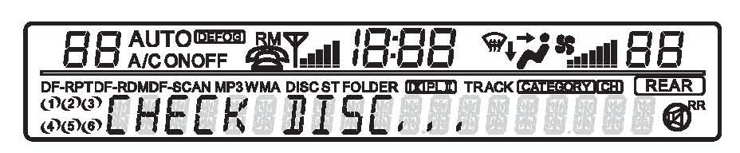
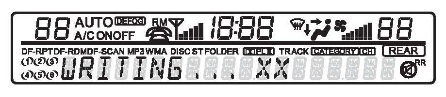
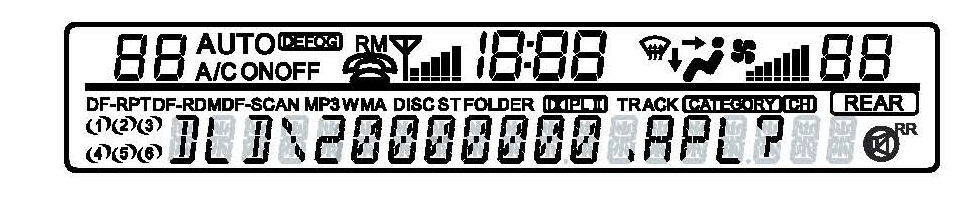
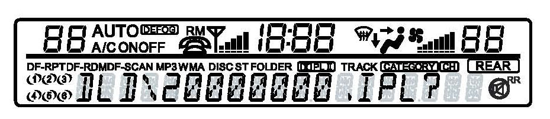
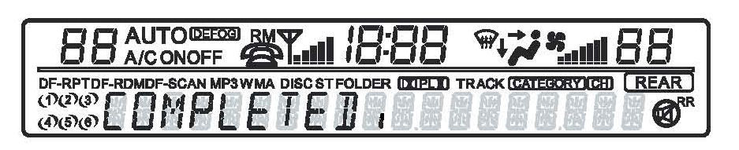

Audio System - Various Audio Unit Malfunction Symptoms
07-052June 16, 2009
Applies To:
2007 MDX With Navigation - See VEHICLES AFFECTED
Radio Turns On After HFL; CD Ejects When Driver's Door Opens; Pop
Heard Through Speakers
(Supersedes 07-052, dated January 29, 2008, to revise the information marked by asterisks, and replaces 07-008, Radio Turns on by Itself)
REVISION SUMMARY
Under SOFTWARE INFORMATION, the replacement disc ordering information has been updated.
SYMPTOM
The audio unit malfunctions with one or more of these symptoms:
^ The radio turns on after the HandsFreeLink is used.
^ A CD ejects from the audio unit when the driver's door is opened.
^ A pop is heard from the speakers when the ignition switch is turned to ON (II).
PROBABLE CAUSE
The audio unit software has a programming error.
CORRECTIVE ACTION
Update the audio unit software and, on some vehicles, replace the stereo amplifier.
VEHICLES AFFECTED
Do REPAIR PROCEDURE A on these vehicles:
2007 MDX -
From VIN 2NHYD28..7H500001
thru 2NHYD28..7H514869
From VIN 2NHYD28..7H532014
thru 2NHYD28..7H547091
Do REPAIR PROCEDURE B and then REPAIR PROCEDURE A on these vehicles:
2007 MDX -
From VIN 2NHYD28..7H514870
thru 2NHYD28..7H532013
SOFTWARE INFORMATION
Audio Unit Software Update Disc
Type A and B, Version 2.000B:
P/N 07AAG-STXA101
NOTE:
Each dealership originally received a two-disc set (Type A and Type B version 2.000). Please discard this two-disc set. Each dealer was then sent a single disc that has both Type A and Type B version 2.000 software on it. *If you need a replacement disc, they are available through the normal parts ordering channels.*
PARTS INFORMATION
(Stereo) Amplifier: P/N 39186-STX-A12
WARRANTY CLAIM INFORMATION

In warranty:
The normal warranty applies.
Failed Part: P/N 39012-STX-A12
Defect Code: 03214
Symptom Code: 01201
Skill Level: Repair Technician
Out of warranty:
Any repair performed after warranty expiration may be eligible for goodwill consideration by the District Parts and Service Manager or your Zone Office. You must request consideration, and get a decision, before starting work.
REPAIR PROCEDURE A: AUDIO UNIT SOFTWARE UPDATE
NOTE:
^ Before doing the update, make sure the vehicle's battery is fully charged.
^ Make sure you have the anti-theft codes for the audio and navigation system.
^ To prevent unnecessary troubleshooting, make sure all audio unit functions are working before you begin.
^ While the software is being updated, don't operate anything electrical (ignition switch, audio system, brakes, A/C, power windows, etc.)
1. Check the audio unit number on the front of the audio unit to ensure the unit can accept the update.

NOTE:
Audio units with identification code 2PFO, 2TFO, 2AFO, or 2DFO are the only units that can be updated.
2. Turn the ignition switch to ON (II).
3. Remove any CDs/DVD-As from the CD changer and any DVD from the RES unit (if equipped).
4. Turn the audio unit off.

5. Press and hold the number 2 and 4 preset buttons, then press the PWR button. DISC DOWNLOAD appears on the audio display. The audio unit initializes the current software. When the system is ready, the audio unit displays INSERT DISC.

6. To insert the disc, press the LOAD button. When the unit is ready to accept the disc, the audio unit displays LOAD.

7. Load the software update disc into the audio unit. The audio unit displays READ, confirming that the unit is reading the software disc. Once the audio unit analyzes the disc, the audio unit displays the file name DLD\20000000.APP?

8. Press the SOUND button to begin the software update. The audio unit displays CHECK DISC, confirming that the unit is reading the disc.
NOTE:
If you do not press the SOUND button within 3 minutes, the audio unit times out. If the audio unit times out, repeat steps 1 thru 8.

9. When the software begins updating, the audio unit displays WRITING...XX.

10. After the software updates the first file, the audio unit displays the file name DLD\20000000.APL?
11. Press the SOUND button to download the file.

12. After the software updates the second file, the audio unit displays the file name
DLD\20000000.IPL?
13. Press the SOUND button to download the file.

14. When the audio unit software finishes updating, the audio unit displays COMPLETED.
15. Wait for the software disc to eject. Remove the software disc, and store it in the protective case. The audio unit software is now updated.
NOTE:
Don't store the software disc in direct sunlight.
16. Turn the ignition switch to LOCK (0).
17. Turn the ignition switch to START (III) and then to LOCK (0), and make sure the audio system does not have a popping noise.
^ If the audio system does not have a popping noise, go to step 20.
^ If the audio system still has a popping noise, go to step 18.
18. Remove the stereo amplifier.
^ Refer to page 23-95 of the 07-09 MDX Service Manual, or
^ Online, enter keywords AMP REMOVAL, and select Stereo Amplifier Removal/Installation from the list.
19. Check the serial number on the amplifier. If the serial number is 114755thru 131688, replace the amplifier.
20. Press the PWR button to turn the audio unit on, and enter the anti-theft codes to resume normal operation.
^ Move the vehicle outside, and check the AM, FM, and XM (if equipped) radio reception.
^ Insert a CD and DVD (if equipped) to check the audio unit and RES operation.
REPAIR PROCEDURE B: AUDIO UNIT (STEREO) AMPLIFIER REPLACEMENT
1. Replace the stereo amplifier.
^ Refer to page 23-95 of the 07-09 MDX Service Manual, or
^ Online, enter keywords AMP REMOVAL, and select Stereo Amplifier Removal/Installation from the list.
2. Go to REPAIR PROCEDURE A and do all steps except steps 18 and 19.

Disclaimer